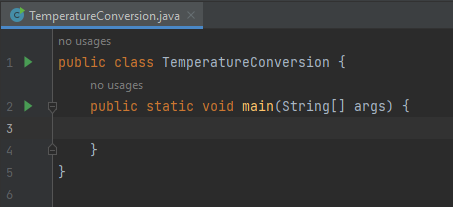
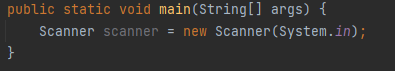
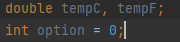
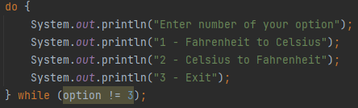
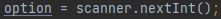
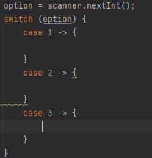
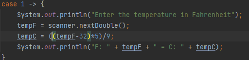
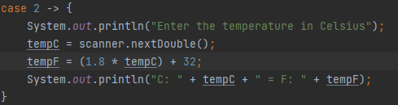
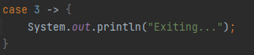
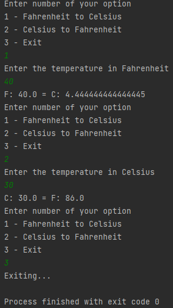

Create a new Java file.
In the main method, create a Scanner object. This is needed to get the user input.
Next, create two variables with the double data type, one for Celsius and one for Fahrenheit. Also, create an integer variable with a value of zero. The program will keep asking for input until the user chooses to exit the program, and if this integer variable is equal to a certain value, the program will stop.
Create a do-while loop. A do-while loop functions like a while loop, except it runs at least once, even if the condition is false. Add prompts that indicate the available options for the user: 1 - Convert from Fahrenheit to Celsius, 2 - Convert from Celsius to Fahrenheit, and 3 - stop the loop and terminate the program.
Warning: If you run the program at this point, it will be an infinite loop since the "option" variable is not updated yet, meaning the program will loop forever.
After the prompts, set the value of option to the value that the user will input.
Create a switch structure which will execute different statements depending on the value of the option variable. For this tutorial, we will use the enhanced switch statement introduced in Java 13, which makes use of arrows.
For case 1, prompt the user to input the temp in Fahrenheit, store it in the appropriate variable, then compute for Celsius using the value of Fahrenheit and store it in the other variable. Afterwards, print it for the user to see.
For case 2, do the same thing but in reverse. The calculation is different as well.
For case 3, simply output a message that the program will exit.
The program is ready to go. As you can see, it will keep asking the user for input until the user inputs 3, which stops the program.
